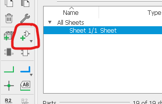

Electronic Design
Previously in Electronics Production, we simply converted an already done ISP board PNG image to Gcode. For this week, we were taught on how to design our very own PCB layout. To do so, we will be using an electronic design automation (EDA) software, called EAGLE. Below shows my documentation process of me designing and cutting out my own PCB board.
Autodesk EAGLE
Before doing anything, we first have to download the actual EAGLE software itself.
Libraries
We then have to install a library called "fab.lbr", and add it to EAGLE so that we can use the component symbols in a schematic. To do so, simply just press on the fab.lbr and click on the download button as seen below.
{kind=link}
Once downloaded, we then go ahead and find our EAGLE library folder. By default, it should be in the documents folder, unless changed by you. Once in the libraries folder, we can then go ahead and paste our downloaded eagle_fab.lbr file into the folder.
{kind=link}
Last but not least, in order for us to activate the library, we have to head on to EAGLE, click on Libraries and ensure that the "eagle_fab.lbr" is lighted up green. This tells us that the library is in use.
{kind=link}
Assignment
Now that we got the basic configuration done, the assignment given to us is to refer to the given schematics and redraw it by adding (at least) a button and an LED (with current limiting resistor). The example schematic we went for was the ATtiny45. The sample schematic is as seen below.

New Project
We start by creating a new project. To do so, simply just press on Projects and right click the projects folder. After that, We right click our new project New > Schematic. Once greeted by the schematic screen, what I usually do before I start is I would usually enable the grid by clicking on the icon as shown below. This is to help me lay out the components easier later on.
{kind=link}
In order to add components, we have to click on the Add Parts, either on the bar at the left, or you could press Edit > Add, or simply press Ctrl + Shift + A.
{kind=link}
{kind=link}
Components
{kind=link}
Now that wesee this component tab, scroll all the way down until you see eagle_fab and click on the arrow. This shows our different components available. Next, the first thing i did was find a frame and place it onto our schematic. Once that is done, i searched for the ATtiny45 IC, and all the other components, base on the schematic sample above. Once i have all the components laid out, we have to do the wiring. To do that, simply just click on Net. After that, you connect according to the sample, while also omplementing the LED and button. The end product should look like this.
Component Values and Names
Last but not least, we have to name our components. To do so, simply click on Name and click on the different components to give them the name. Next click on the icon beside it called Value, and click on the different icon the different values. Lastly, once all that is done, we can go ahead and check if all our connections are done. To do so, all we have to do is Tools > ERC, or simply press Ctrl + Shift + E. ERC stands for Electric Rule Checking, where the program will check if there is anything wrong with your connections.
{kind=link}
Once that is done we can finally convert our schematic into a PCB layout. The final schematic should more or less look like the one below.
{kind=link}
PCB Layout
To first change our schematic into a PCB layout, we have to press on the green BRD button on the top left of EAGLE.
{kind=link}
Preparing
Before doing anything on the layout, we first have to set up a few things. Firstly we have to resize the board simply by dragging the corners. We have to take note that all components shoulbe be as close as possible to the bottom-left corner where the crosshair is located.
Components Placement
In order to help me place the components, i turned on grids as before. Then, i clicked on the "Layers" tool and disselected those once that i am not using. Once that is done, i can then go ahead and play around and place my components. Below shows what i did.
{kind=link}
Routing
Next is the painful part which took me alot of tries to get right. It is the routing of airwire. This is basically routing our threads. To access it, simply click on Routing Airwire. This is a manual method where we route following the yellow line. There is also an automatic method but i don't have any luck using it as it will always fail on me so i prefer doing it manually. Once done correctly, it should more or less look like the image below where everything is connected.
{kind=link}
{kind=link}
Board File
We can check if the connections are good by clicking doing the ERC test again. Last but not least, we have to configure our Design Rule Checking (DRC) by going to Tools > DRC and configure the seetings as seen below.

{kind=link}
Convert to PNG and Gcode
To convert Traces, what i did was, i hide all the layers except Top. Then File > Export > Image. For the settings, make sure that it is set to Monochrome, with DPI of 1000. Click on Browse to store your PNG and then click on ok. For Outline, we first have to select Line and draw the outline of your board. Then only select your outline layer and do the same as for the traces.
{kind=link}
The PNG images is as shown below. Once we get the PNG image, we can then go ahead and generate the Gcode just like we did previously, before cutting it out.
{kind=link}
{kind=link}
Gcodes:
Traces Gcode Outline GcodeMilling Process
We do the same thing as before. Took me a couple of tries to properly mill my board to to minor faults on my end. Eventually i got to cut it.
I have forgotten to take a picture of my board before soldering but it more or less looks like my classmate's board below:
{kind=link}
Soldering
| Item | Qty |
|---|---|
| Push Button | 01 |
| LED | 01 |
| ATtiny45 | 01 |
| 10K resistor | 01 |
| 499 resistor | 01 |
| 1uF Capacitor | 01 |
| FDTI Connector | 01 |
| 2x3 pin Header | 01 |
For soldering, those are the components needed, as seen from the schematic above. Just like the previous board, i removed the excess copper, added some flux and soldered the components on. The results are seen below.
{kind=link}